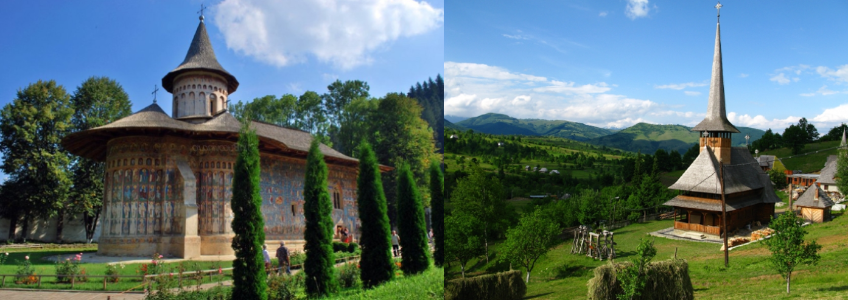

Excursii.
MARAMURESUL + BUCOVINA

Din program :
Gradina Botanica Jibou, Muzeul Mineralogic Baia Mare, Pasul Huta-Certeze, Cimitirul vesel si manastirea de la Sapanta, Sighetul Marmatiei, Complehul Monahal Barsana, Valea Izei , Statiunea Borsa si Cascada Cailor, Plimbare cu Mocanita pe Valea Vaserului, Manastirile Voronet, Humor, Putna, Sucevita, Moldovita, Centru de ceramica neagra Negresti, Statiunea Vatra Dornei, Pasul. Tihuta.
Plecare ora 6,00 de la Cinema Dacia. Locul de plecare este si locul de sosire.
Inscrierile se fac o data cu plata sau avansul actiunii.
NU se fac retineri de locuri prin telefon decat 24 ore timp in care se va putea plati .
Ziua 1.
Resita - Hateg - Alba Iulia - Turda - Cluj Napoca - Jibou - Baia Mare , cina + cazare.Ziua 2.
Baia Mare, mic dejun - Negresti Oas - Huta-Certeze - Sapanta - Sighetu Marmatiei - Barsana - Valea Izei - Statiunea Borsa, cina+cazare.Ziua 3.
Borsa, mic dejun, Viseul de Sus / Valea Vaserului cu Mocanita - Statiunea Borsa, cina+ cazare.Ziua 4.
Borsa, mic dejun - Pasul Prislop - Campulung Moldovenesc - Manastirea Voronet, Manastirea Humor - Cacica - Manastirea Putna - Marginea - Manastirea Sucevita - Vatra Moldovitei, cina + cazare.Ziua 5.
Vatra Moldovitei, mic dejun - Manastirea Moldovita - Vatra Dornei - Pasul Tihuta - Bistrita - Gherla - Turda - Alba Iulia - Hateg - Resita.Lista Perioada Excursii si Prețuri.
- 8- 12 MAI 2024.Preț = 1300,00 lei
CONDITII DE ANULARE :
- Cei care au beneficiat de reducere, in caz de retragere vor pierde toata suma depusa. Se admite doar inlocuire de persoana, dar la pret intreg 1300 lei.
- 30% penalizare pentru anularea cu mai mult de 45 zile inainte de plecare.
- 100% penalizare pentru anularea cu 45 – 0 zile inainte de plecare sau no schow.
DELTA DUNARII
Din program :
- două zile de DELTA care vor include :
traseul 1. O zi la LETEA si SULINA, ( lacuri, canale Mila 23, Sat Letea, Padurea Letea - obtional pranz pescaresc 70 lei / persoana )– orasul Sulina, iesire la mare – revenire la Tulcea.
traseul 2. O zi la Caraorman, Bratul Sf. Gheorghe, Mahmudia, Lac Carasuhat, Canal Litcov, Lacul Rotund, Lacul Gorgova, Lacul Cuibida, Canal Caraorman, Sat Caraorman. ( optional plimbare prin Padure = 40 lei / pers si pranz pescaresc = 80 lei / persoana. ) Revenire la Tulcea .Tur de Litoral cu popas in Constanta , zona Cazino - Port.
Plecare ora 6,00 de la Cinema Dacia. Locul de plecare este si locul de sosire.
Inscrierile se fac o data cu plata sau avansul actiunii.
NU se fac retineri de locuri prin telefon decat 24 ore timp in care se va putea plati .
Program :
Ziua 1
. RESITA - TULCEA, cina + cazare.Ziua 2.
Tulcea, mic dejun - DELTA DUNARII - traseul 1 - Tulcea, cina+ cazareZiua 3.
Tulcea, mic dejun - DELTA DUNARII - traseul 2 - Tulcea, cina+cazare.Ziua 4.
TULCEA , mic dejun – Constanta - Mangalia zona EFORIE, cina+ cazare.Ziua 5.
Zona EFORIE, mic dejun - Constanta – Bucuresti – Craiova – Caransebes – RESITA.Din program :
Două zile de DELTA care vor include :
O zi la LETEA si SULINA, ( lacuri, canale Mila 23, Sat Letea, Padurea Letea - obtional pranz pescaresc 70 lei / persoana ) – orasul Sulina, iesire la mare – revenire la Tulcea.
O zi la Caraorman, Bratul Sf. Gheorghe, Mahmudia, Lac Carasuhat, Canal Litcov, Lacul Rotund, Lacul Gorgova, Lacul Cuibida, Canal Caraorman, Sat Caraorman. ( optional plimbare prin Padure = 40 lei / pers si pranz pescaresc = 80 lei / persoana. ) Revenire la Tulcea.
Pretul include :
- trei nopti cazare +demipensiune (cina+m.d.) la Tulcea.
- una cazare + mic dejun zona Eforie..
- Transport autocar Resita - Tulcea si retur.
- Transport Delta Dunarii 2 zile cu salupe de 16 locuri.
- Pana la data de 10.03.2023.
- Pentru plecare minim 34 persoane !!
Lista Perioada Excursii si Prețuri.
- 22 - 26 MAI 2024.Preț informativ= 1800,00 lei
CONDITII DE ANULARE :
- Cei care au beneficiat de reducere, in caz de retragere vor pierde toata suma depusa. Se admite doar inlocuire de persoana, dar la pret intreg 1850 lei.
- 30% penalizare pentru anularea cu mai mult de 45 zile inainte de plecare.
- 100% penalizare pentru anularea cu 45 – 0 zile inainte de plecare sau no schow.